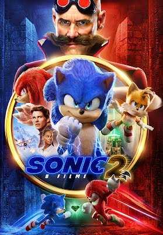

Seja bem vindo fico feliz que sua família ficou interessada a ver nossas recomendações, bom proveito

Sonic 2 - O Filme é uma sequência dos acontecimentos do primeiro live-action de Sonic - O Filme, baseado no videogame de sucesso. Após conseguir se estabelecer em Green Hills, Sonic está pronto para mais liberdade e quer provar que tem o necessário para ser um herói de verdade. Seu teste virá quando Tom e Maddie concordam em deixá-lo em casa enquanto saem de férias para ir ao casamento da irmã de Rachel, no Havaí. Mas para a infelicidade do ouriço, a data acaba coincidindo com o retorno do Dr. Robotnik, dessa vez com um novo parceiro, Knuckles, depois que o doutor do mal vai embora para o planeta cogumelo. O terrível Robotnik está à procura de uma esmeralda com o poder de destruir civilizações. Sonic se une a um novo companheiro, Tails, e juntos eles embarcam em uma jornada para encontrar a esmeralda antes que ela caia nas mãos erradas.
Duração: 2 horas e 02min
Classificação indicativa: 10 anos
Mario é um filme baseado na série de video games, Super Mario Bros, da Nintendo. Em Super Mario Bros. - O Filme, Mario (Chris Pratt) é um encanador qualquer no bairro de Brooklyn junto com seu irmão Luigi (Charlie Day). Um dia, Mario e Luigi vão para no reino dos cogumelos, governado pela Princesa Peach (Anya Taylor-Joy), mas ameaçado pelo rei dos Koopas, Bowser (Jack Black), que vai fazer de tudo para conseguir reinar todos os lugares. É então quando Luigi é raptado por Bowser e o usa para procurar Mario, o único capaz de deter o Koopa e reestabelecer a paz. Mario terá que aprender como viver nesse novo reino perigoso, passando por vários biomas, aprender a dirigir carros, utilizar itens que o fazem soltar bolas de fogo das mãos, virar um animal e andar em plataformas nada confiáveis. Também estará acompanhados de amigos, como Toad (Keegan-Michael Key) e Donkey Kong (Seth Rogan).
Duração: 1 hora e 32min
Classificação indicativa: Livre para todas as idades